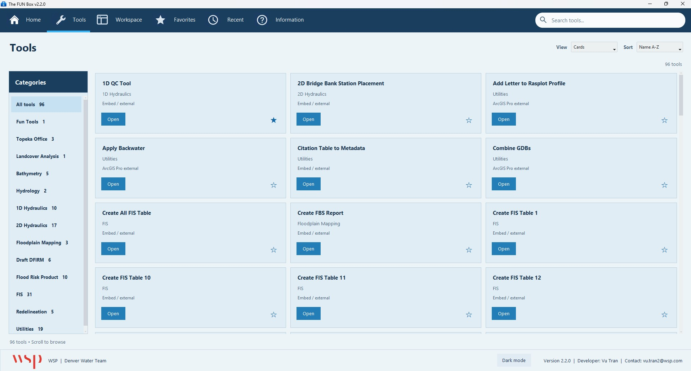
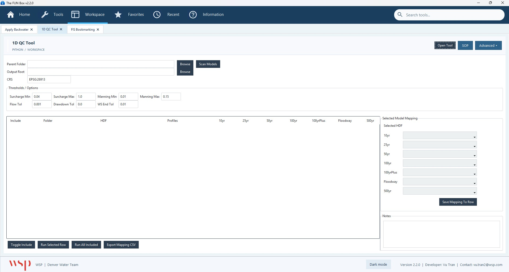

Repeated work across different project types
Floodplain and engineering projects depend on recurring data preparation, geoprocessing, and quality-control tasks. Manual workflows can be slow and inconsistent across projects and teams.
I independently developed a suite of 96 Python-based GIS tools that bring repeatable hydraulic, floodplain, and spatial-processing workflows into one workspace.

Floodplain and engineering projects depend on recurring data preparation, geoprocessing, and quality-control tasks. Manual workflows can be slow and inconsistent across projects and teams.
I designed and developed 96 tools and organized them into 13 categories aligned with project types. A centralized launcher allows colleagues to access the relevant workflows without assembling individual scripts.
Conceptual workflow; not an actual FUN Box screenshot.
The platform has an estimated 26–50 users, is used daily, and receives updates approximately every month. Selected tools have delivered up to a reported 90% reduction in processing time.
The strongest value is not the tool count alone: it is the combination of independent development, multi-office adoption, and ongoing maintenance.

